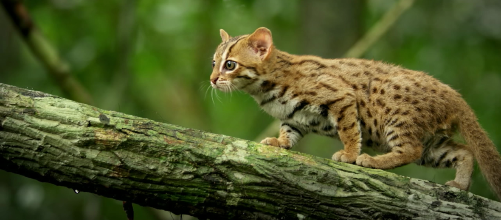

The Rusty-Spotted Cat is the world's smallest wild cat! Coming in from 14 to inches tall and weighing only 2 to 3.5 pounds, it's tail makes up half of its body length! They live in grasslands and dry forests of India and Sri Lanka. They are fierce predators, huting rodents and birds; they are even known to take down large chickens! They hunt mostly on the ground, but are known to climb trees and branches to avoid predators. Thought to be extremely rare, scientists now think they are more abundant than recently thought. However, they are facing a loss of their habitats due to humans clearing land for farming.
